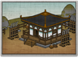
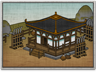

Basic Unit Statistics (can be modified by difficulty level, arts, skills, traits and retainers)
| Recruitment Cost | 650 | |
| Upkeep Cost | 150 | |
| Melee Attack | 4 | 11% |
| Charge Bonus | 5 | 10% |
| Bonus vs Cavalry | 0 | 0% |
| Range | 150 | 23% |
| Accuracy | 40 | 40% |
| Reloading Skill | 45 | 45% |
| Ammunition | 25 | 31% |
| Melee Defence | 2 | 5% |
| Armour | 4 | 26% |
| Morale | 10 | 20% |
Strengths & Weaknesses
- Good accuracy and reload rate.
- Very good morale.
- Vulnerable to cavalry and archers.
Abilities
- Flaming Arrows - This unit can fire flaming arrows for a short period of time. Flaming arrows have a greater damage effect and can set fire to flammable objects. Flaming arrows don't function in wet weather.
- Increased Range - This temporarily increases a unit's firing range.
Requires
- Buildings:
 

Description
These skilled warrior monks can fire arrows at distant enemies with every expectation of doing bloody work.
These warrior monks are armed with powerful bows and can attack enemies at a surprising range. They can also bombard foes with terrifying fire arrows. These are especially dangerous in a country such as Japan where wooden buildings are common. Bow warrior monks need careful handling in the presence of the enemy: they are not trained to fight in melee, and are likely to suffer if they are attacked by cavalry. In all probability the small unit size means that they will be quickly cut down in close combat, even with friendly support. Bow warrior monks practiced archery with the same dedication they gave to their religious duties. Indeed, the skill and stillness required for archery was as much an act of meditation as any amount of monkish contemplation. Long years of practice, however, paid off in battle because their bow techniques were so ingrained as to be done without conscious thought or hesitation. Given reasonable weather, monks would, and did, kill everything and everyone foolish enough to stray within bowshot.